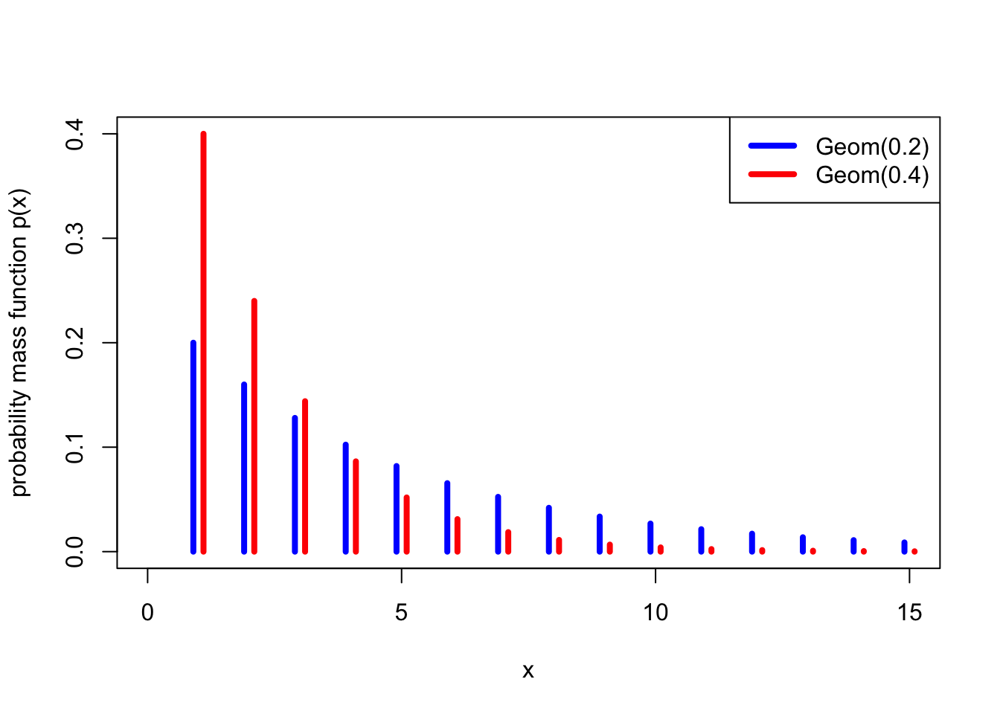

Lecture 11 Binomial and geometric distributions
The mid-semester check-in survey is now open.
Last week, we developed the idea of random variables, and in particular discrete random variables. We saw that the benefit of random variables is that we can just worry about their distribution, which often allows us to move the sample space \(\Omega\) and other more technical matters into the background. (Here, we informally use the word “distribution” to refer to the probability mass function of a random variable – or, later, the continuous equivalent, the probability density function).
There are some distributions – or, rather, some families of distributions – that are so useful that we often want to use them for modelling real-world quantities. This week, we will look at a number of useful discrete distributions.
11.1 Binomial distribution
One family of distributions we have already seen is the Bernoulli trial \(\text{Bern}(p)\), which is 1 with probability \(p\) and 0 with probability \(1-p\). We saw that this could model whether or a biased coin lands Heads, or more generally whether an experiment is successful.
Example 11.1 Suppose we toss 10 independent biased coins, each of which lands Heads with probability 0.7 and Tails with probability 0.3. What is the probability we get exactly 8 Heads altogether?
The probability that any specific 8 coins land Heads and the other 2 land Tails is \(0.7^8\times 0.3^2\). However, there are \(\binom{10}{8}\) choices for which 8 coins are the ones that land Heads. Hence, the probability is \[ \mathbb P(\text{8 Heads}) = \binom{10}{8} \times 0.7^8 \times 0.3^2 = 0.23.\]
This is a special case of the binomial distribution.
Definition 11.1 Let \(X\) be a discrete random variable with range \(\{0,1,2,\dots,n\}\) and PMF \[ p(x) = \binom{n}{x} p^x (1-p)^{n-x} . \] Then we say that \(X\) follows the binomial distribution with parameters \(n\) and \(k\), and write \(X \sim \text{Bin}(n,p)\).
So a binomial random variable represents the number of successes in \(n\) Bernoulli trials. In our previous example, the number of Heads from the coin tosses was \(\text{Bin}(10, 0.7)\).

Example 11.2 Let \(X \sim \mathrm{Bin}(8, 0.2)\). What is (a) \(\mathbb P(X = 3)\)? (b) \(\mathbb P(X \geq 2)\)?
For (a), we have from the definition \[ \mathbb P(X = 3) = \binom83 0.2^3 (1 - 0.2)^{8-3} = 56\times 0.2^3\times0.8^5 = 0.147 .\]
For (b), this is an “at least” question, so it’s more convenient to look at the complementary event, \(\mathbb P(X < 2)\). So \[\begin{align*} \mathbb P(X \geq 2) &= 1 - \mathbb P(X < 2) \\ &= 1 - \mathbb P(X = 0) - \mathbb P(X = 1) \\ &= 1 - 0.8^8 - 8\times 0.2 \times 0.8^7 \\ &= 1 - 0.168 - 0.336 \\ & = 0.497 . \end{align*}\]
What about the expectation and variance of a binomial random variable?
Theorem 11.1 Let \(X \sim \text{Bin}(n, p)\). Then
- \(\mathbb EX = np\),
- \(\operatorname{Var}(X) =np(1-p)\).
One can prove this by working out the sums – for example, the expectation is the value of the sum \[ \mathbb EX = \sum_{x=0}^n x \binom{n}{x} p^x (1-p)^{n-x} , \] which is a bit tricky to calculate, but not fundamentally difficult mathematics. However, in next section we will see an easier way, so we’ll reserve the proof until then instead.
For my 10 biased coins that are each Heads with probability \(0.7\), the expectation and variance are \[\begin{align*} \mathbb EX &= 10 \times 0.7 = 7 \\ \operatorname{Var}(X) &= 10 \times 0.7 \times 0.3 = 2.1 \end{align*}\]
11.2 Geometric distribution
Example 11.3 I decide to roll a fair dice until I first roll a six, and then stop. What’s the probability I get the first six on my 5th roll of the dice?
For the first six to be on the 5th attempt, the first 4 rolls have to be non-sixes, and then the fifth roll has to be a six. This has probability \[ \left(\tfrac56\right)^4 \times \tfrac16 = \tfrac{625}{7776} = 0.08.\]
This is a special case of the geometric distribution.
Definition 11.2 Let \(X\) be a discrete random variable with range \(\{1,2,\dots\}\) and PMF \[ p(x) = (1-p)^{x-1}p . \] Then we say that \(X\) follows the geometric distribution with parameter \(p\), and write \(X \sim \text{Geom}(p)\).
So a geometric random variable represents the number of Bernoulli\((p)\) trials until the first success. In our previous example, the number of dice rolls until a six was \(\text{Geom}(\frac16)\).

Example 11.4 Let \(X \sim \mathrm{Geom}(0.4)\). What is (a) \(\mathbb P(X = 3)\)? (b) \(\mathbb P(X \geq 3)\).
For part (a), we have \[ \mathbb P(X = 3) = (1 - 0.4)^2 \times 0.4 = 0.144 . \]
For part (b), we have \[ \mathbb P(X \geq 3) = 1 - \mathbb P(X =1) - \mathbb P(X = 2) = 1 - 0.4 - (1-0.4)\times 0.4 = 1- 0.64 = 0.36 . \]
Theorem 11.2 Let \(X \sim \text{Geom}(p)\). Then
- \(\mathbb EX = \displaystyle\frac1p\),
- \(\operatorname{Var}(X) = \displaystyle\frac{1-p}{p^2}\).
So the expected number of rolls until rolling a six is \[ \mathbb EX = \frac{1}{\frac16} = 6 , \] with variance \[ \operatorname{Var}(X) = \frac{1 - \frac16}{\big(\frac16\big)^2} = 30 . \]
Proof. (Non-examinable) For the expectation, we want to calculate \[ \mathbb EX = \sum_{x=1}^\infty x (1-p)^{x-1} p = p \sum_{x=0}^\infty x (1-p)^{x-1}. \] (We can include the \(x = 0\) term in the sum since it is equal to 0.)
At this point we will invoke the identity \[ \sum_{x = 0}^\infty x a^{x-1} = \frac{1}{(1-a)^2} , \] which can be proved by differentiating the standard sum of a geometric progression \[ \sum_{x = 0}^\infty a^x = \frac{1}{1 - a} \] with respect to \(a\).
Using that identity with \(a = 1-p\), we get \[ \mathbb EX = p \sum_{x=0}^\infty x (1-p)^{x-1} = p\, \frac{1}{\big(1 - (1-p)\big)^2} = \frac{1}{p} , \] as required.
For the variance, we will use a trick that sometimes comes in useful, which is to start by calculating \(\mathbb EX(X-1)\). Here we get \[ \mathbb EX(X-1) = \sum_{x=1}^\infty x (x-1) (1-p)^{x-1} p = p(1-p) \sum_{x=0}^\infty x(x-1) (1-p)^{x-2} . \] To calculate the sum, we note that differentiating the geometric progression formula twice gives \[ \sum_{x = 0}^\infty x(x-1) a^{x-2} = \frac{2}{(1-a)^3} , \] so we get \[ \mathbb EX(X-1) = p(1-p) \sum_{x=0}^\infty x(x-1) (1-p)^{x-2} = p(1 -p) \, \frac{2}{p^3} = \frac{2(1-p)}{p^2} . \]
We now want to use the computational formula \(\operatorname{Var}(X) = \mathbb EX^2 - \mu^2\) to get the variance. We know \(\mu = 1/p\), and from the calculation above, we have \[ \mathbb EX(X-1) = \mathbb EX^2 - \mathbb EX = \mathbb EX^2 - \frac{1}{p} = \frac{2(1-p)}{p^2} . \] So \[\begin{align*} \operatorname{Var}(X) = \mathbb EX^2 - \mu^2 &= \left(\frac{2(1-p)}{p^2} + \frac{1}{p}\right) - \left(\frac{1}{p}\right)^2 \\ &= \frac{2(1-p) + p - 1}{p^2} \\ &= \frac{1-p}{p^2} . \end{align*}\]
Note: Here, we defined a geometric random variable as being the number of trials up to and including the first success, which is a number in \(\{1, 2, \dots\}\). However, some authors define it as the number of failures before the first success, which is a number in \(\{0, 1, 2,\dots\}\). If \(X\) is our definition and \(Y\) is the second “number of failures” definition, then \(X\) and \(Y+1\) have the same distribution. Annoyingly, R uses the “number of failures before success” definition, as we will discuss in a later R worksheet.
Summary
| Distribution | Range | PMF | Expectation | Variance |
|---|---|---|---|---|
| Bernoulli: \(\text{Bern}(p)\) | \(\{0,1\}\) | \(p(0) = 1- p\), \(p(1) = p\) | \(p\) | \(p(1-p)\) |
| Binomial: \(\text{Bin}(n,p)\) | \(\{0,1,\dots,n\}\) | \(\displaystyle\binom{n}{x} p^x (1-p)^{n-x}\) | \(np\) | \(np(1-p)\) |
| Geometric: \(\text{Geom}(p)\) | \(\{1,2,\dots\}\) | \((1-p)^{x-1}p\) | \(\displaystyle\frac{1}{p}\) | \(\displaystyle\frac{1-p}{p^2}\) |
Recommended reading:
- Stirzaker, Elementary Probability, Sections 4.2 and 4.3.
- Grimmett and Welsh, Probability, Section 2.2.